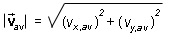

av| of the
average velocity using the components vx,av and
vy,av and the Pythagorean formula,
av| of the
average velocity using the components vx,av and
vy,av and the Pythagorean formula,
Things to Understand about Average Velocity.
1. Average velocity is not the same as average speed.
Exercise (to illustrate the second bullet). For the average
velocity obtained in the Exercise on Page 2, calculate the magnitude
|av| of the
average velocity using the components vx,av and
vy,av and the Pythagorean formula,

Compare this magnitude to the average speed, vav. Is it equal to, less than or greater than the average speed? Can you explain the numbers you observe?
The magnitude of the average velocity is in general different from
the average speed. Therefore, we must use different symbols for the
two quantities. The notation vav is used only for
average speed while the more elaborate notation |av| is used for the magnitude
of the average velocity.